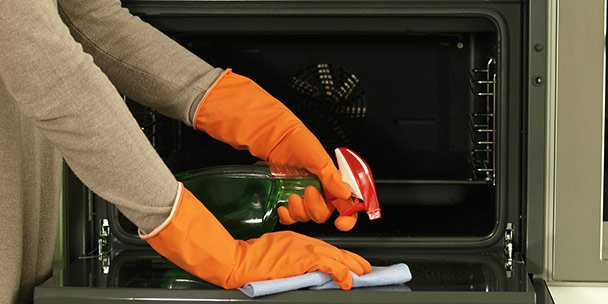
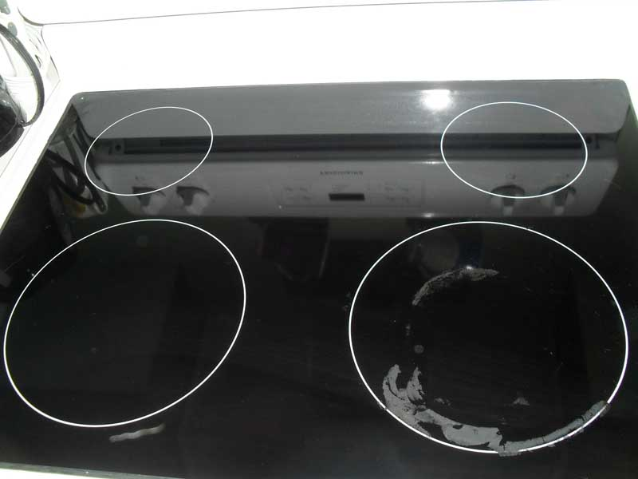

Cleaning tips for a sparkling stove!
Written by someone
10 October 2017
To clean your stove can be hard, especially if you wanna get rid of all those burnt in scraps.
That's why today im gonna share some of my secrets of how to make your stove look like it's new again!
Cleaning the oven
What you will need
- Baking soda
- Water
- Rubber gloves
- Damp dish cloth
- Plastic or silicone spatula
- Spray bottle
- White vinegar
Instructions
-
Remove the oven racks:
Remove your oven racks, pizza stone, oven thermometer, and anything else you have inside the oven. Set aside.
-
Make a baking soda paste:
In a small bowl, mix a 1/2 cup of baking soda with a few tablespoons of water. Adjust the ratio of both as needed until you have a spreadable paste. For me this took about 3 tablespoons of water to get the desired spreadable consistency.
-
Coat your oven:
Spread the paste all over the interior surfaces of your oven, steering clear of the heating elements. I used gloves for this portion as my oven was pretty grimy. It helped me really get in there and coat the dirtiest nooks and crannies without having to worry about all that grime under my nails. The baking soda will turn a brownish color as you rub it in; it also might be chunkier in some places than others. That is fine. Just try to coat the whole oven to the best of your abilities, paying attention to any particularly greasy areas.
-
Let it sit overnight:
Allow the baking soda mixture to rest for at least 12 hours, or overnight.
-
Clean your oven racks:
Meanwhile, clean your oven racks.
-
Wipe out the oven:
After 12 hours or overnight, take a damp dish cloth and wipe out as much of the dried baking soda paste as you can. Use a plastic or silicone spatula to help scrape off the paste as needed. I found that the damp cloth was enough for me, but a spatula might come in handy in those hard-to- reach places.
-
Spray a little vinegar:
Put a little vinegar in a spray bottle and spritz everywhere you still see baking soda residue in your oven. The vinegar will react with the baking soda and gently foam.
-
Do a final wipe down:
Take your damp cloth and wipe out the remaining foamy vinegar-baking-soda mixture. Repeat until all the baking soda residue is gone. Add more water or vinegar to your cloth as needed while wiping to really get the oven clean and shiny.
-
Replace your oven racks:
Replace the oven racks and anything else you keep in your oven, and you're done!
Cleaning the stove top
-
Wipe down with vinegar
With all burners cool, spray the surface of your glass top with white vinegar and wipe with a damp cloth to remove any surface debris and degrease the surface. Any surface cleaner will get the job done here, but vinegar is inexpensive and is always on hand.
-
Cover With Baking Soda
Sprinkle baking soda over the entire top. Baking soda is a great natural cleaner because this mild alkali helps breakdown grit and grime more easily and the mild abrasive quality will make scrubbing more effective without scratching the glass.
-
Wet down a towel
Fill a bucket or the sink with hot water and drop an old towel to dampen.
-
Cover stove top with towel.
Wring out the towel and place it on stovetop to completely cover the surface. If you prefer, two smaller towels may be used. Leave the towel in place for about 15 minutes to soak and loosen the crud that has accumulated.
-
Scrub!
Use elbow grease and the mild abrasive that is baking soda to clean the stove. Rinse and wring your towel frequently and scrub until there is no baking soda left on the stove and the surface is as clean as you think you can get it by scrubbing.
-
Scrape!
No matter how careful we try to be, burnt on sauce or jam is inevitable on a glass top stove. While the stove is still damp, very carefully scrape any stubborn burned on crud off using a razor blade. Work one spot at a time with even motion to avoid scratching the glass. A graspable razor blade holder is highly recommended for easy, effective and safe use.
-
Polish
Finish up with one more pass with the vinegar and damp cloth and then buff with a dry cloth to make it shine.